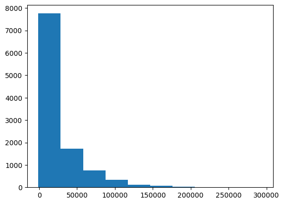
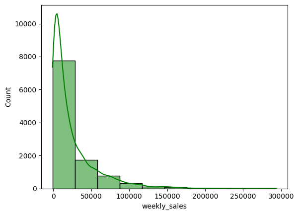
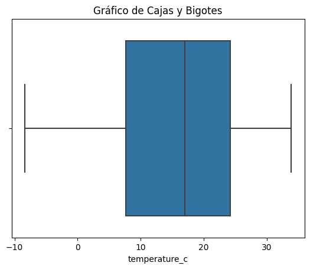
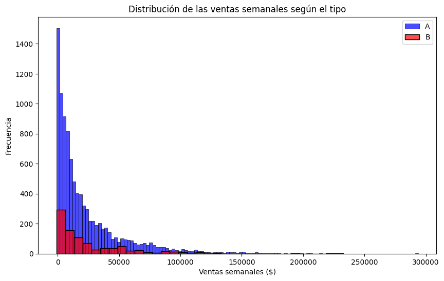
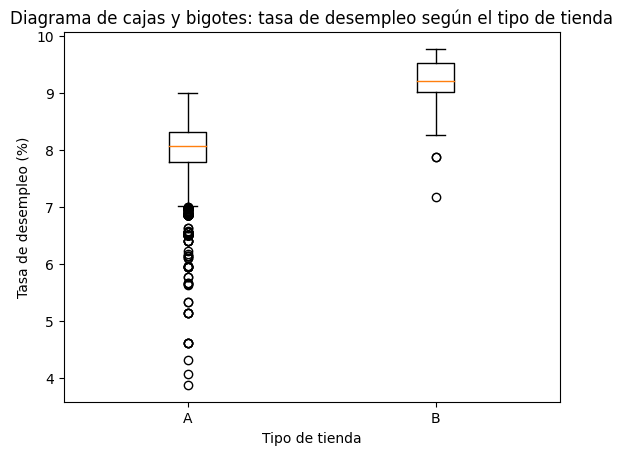

Sección 1: Conceptos básicos de Python#
¿Qué es python?#
Python es un lenguaje de programación de alto nivel, interpretado y de propósito general, conocido por su sintaxis simple y legible. Es uno de los lenguajes más utilizados en ciencia de datos, inteligencia artificial, automatización y desarrollo de software.
Importancia de Python
Facilita el análisis y la manipulación de grandes volúmenes de datos.
Cuenta con un amplio ecosistema de bibliotecas para estadística, visualización y aprendizaje automático.
Es uno de los lenguajes más demandados en la industria y la investigación por su versatilidad y facilidad de uso.
Entornos de desarrollo (Jupyter Notebook)#
Miniconda es una distribución ligera de Anaconda, que es una distribución de Python y R para la computación científica, que incluye más de 250 paquetes científicos preinstalados y es compatible con Windows, macOS y Linux.
Entra a la página de miniconda y escoger su instalador. Esta instalación se hizo para windows. Siga los siguientes pasos:
Ingrese a la página oficial de Miniconda:
Descargue el instalador correspondiente a su sistema operativo (Windows, macOS o Linux).
Ejecute el instalador y complete el proceso de instalación con las opciones predeterminadas.
Una vez finalizada la instalación, abra Anaconda Prompt (Windows) o una terminal (macOS/Linux).
Luego de ello, se creará el ambiente virtual que se encargan de crear un espacio aislado para cada proyecto de Python, donde se instalan únicamente las bibliotecas y versiones necesarias.
A continuación la serie de pasos a seguir para crear un ambiente.
Ejecute el siguiente comando para crear un nuevo ambiente con Python 3.10:
conda create -n magister_venv python=3.10 -y
Activación del ambiente#
En Windows:
conda activate magister_venv
En macOS o Linux:
conda activate magister_venv
Instalación de las bibliotecas del curso#
Instale todas las dependencias utilizando el archivo requirements.txt, el cual se encuentra en el siguiente link : s3rgiorafael2018-create/Requirements
Con el siguiente comando se instalan las librerias en el entorno.
pip install -r requirements.txt
Para seguir configurando las demás aplicaciones ingresar al siguiente link#
Tipos de datos#
Los tipos de datos básicos más comunes en Python son:
Entero: Se representa con la palabra clave int; por ejemplo, 45 o 38.
Real o punto flotante: Son los números que contiene un punto decimal entre dos dígitos y se representa con la palabra clave float, por ejemplo, 0.29 o 0.03.
Complejos: Un número complejo es de la forma \(a+bi\) donde a,b son números reales y se define con la palabra clave complex Por ejemplo, \(2+3j\).
Cadenas: Están conformados por una secuencia de caracteres encerrados entre comillas simples o dobles. Se representan por la palabra clave str; por ejemplo, “Toma de todo”, “Hola mundo”.
Lógicos y booleanos: Estos tipos de datos solo pueden tomar dos valores, True o False, donde True toma valor de 1 y False toma el valor de 0. Se representan por la palabra clave bool.
Variables#
Las variables son nombres que hacen referencia a un valor. Este valor puede cambiar a lo largo de la ejecución de un programa. Las variables son espacios de la memoria principal del computador, en donde se almacenan valores de forma temporal o permanente durante la ejecución de un programa.
Operacción de asignación#
a = 3 # asignación del valor
b = 5 # asignación del valor
d = a # asignación del valor
c = a + b # asignación del valor
Tipo de datos de variables#
a = 76; b = 3.68; c = 2+3j; d = True; s = 'cadena'
type(a), type(b), type(c), type(d), type(s)
(int, float, complex, bool, str)
Variables estadísticas#
Variables cualitativas (categóricas): Describen atributos o cualidades de los individuos. Sus valores representan categorías y no tienen significado numérico.
Nominales: No poseen un orden natural entre sus categorías, Ejemplos: Género, color de ojos, ciudad de residencia, tipo de sangre.
Ordinales: Sus categorías tienen un orden o jerarquía, pero la distancia entre ellas no es cuantificable. Ejemplos: Nivel educativo, nivel de satisfacción (bajo, medio, alto), clasificación de riesgo.
Variables cuantitativas (numéricas): Representan cantidades y permiten realizar operaciones aritméticas.
Discretas: Solo pueden tomar valores enteros, generalmente resultado de un conteo. Ejemplos: Número de hijos, cantidad de vehículos, número de llamadas recibidas.
Continuas: Pueden tomar cualquier valor dentro de un intervalo y generalmente provienen de una medición. Ejemplos: Estatura, peso, temperatura, tiempo, ingresos.
Estructuras de control#
Sentencia de entrada:#
La sentencia de entrada de datos corresponden a la función input. Esta sentencia se utiliza para capturar la entrada del usuario desde la consola.
x = input("Escriba un número real: ")
---------------------------------------------------------------------------
StdinNotImplementedError Traceback (most recent call last)
Cell In[3], line 1
----> 1 x = input("Escriba un número real: ")
File ~\.conda\envs\dataviz_venv\lib\site-packages\ipykernel\kernelbase.py:1201, in Kernel.raw_input(self, prompt)
1199 if not self._allow_stdin:
1200 msg = "raw_input was called, but this frontend does not support input requests."
-> 1201 raise StdinNotImplementedError(msg)
1202 return self._input_request(
1203 str(prompt),
1204 self._parent_ident["shell"],
1205 self.get_parent("shell"),
1206 password=False,
1207 )
StdinNotImplementedError: raw_input was called, but this frontend does not support input requests.
x = int(input('Escribe un número entero '))
x = float(input('Escribe un número entero '))
type(x)
float
Sentencia de salida:#
La sentencia de salida de datos corresponden a la función print. Esta sentencia se utiliza para mostrar texto y otros tipos de datos en la consola. Por ejemplo
# Uso del print
print('Python')
# Uso de la función básica print
print('El número ingresado es ', x)
# Uso del print con varias palabras sin separarla
print('Introducción' 'a' 'la' 'ciencia' 'de' 'datos' 'con' 'Python')
# Uso del print con varias palabras con separación
print('Introducción','a','la','ciencia','de','datos','con','Python')
Python
El número ingresado es 2.0
IntroducciónalacienciadedatosconPython
Introducción a la ciencia de datos con Python
# Uso del print con espacio sin salto de linea
# end = ' ', tiene un espacio
print('Ciencia', end = ' ')
print('de', end = ' ')
print('datos')
Ciencia de datos
Operaciones aritmeticas#
Los operadores aritméticos en Python son fundamentales para realizar cálculos. Se aplican sobre operandos, que pueden ser tanto variables como constantes. La tabla siguiente recoge los operadores más comunes en Python.
Ordenm de las operaciones
Python sigue un orden de precedencia para determinar qué operaciones se realizan primero.
Prioridad |
Operador |
Operación |
Ejemplo |
|---|---|---|---|
1 |
|
Paréntesis |
|
2 |
|
Potenciación |
|
3 |
|
Signo positivo o negativo |
|
4 |
|
Multiplicación, división, división entera y módulo |
|
5 |
|
Suma y resta |
|
Regla general:
Cuando dos operadores tienen la misma prioridad, Python normalmente los evalúa de izquierda a derecha.
# Uso de las operaciones aritmeticas
# Definición de variables
a = 10
b = 3
c = 2
# Combinación de varios operadores aritméticos en una sola línea
resultado = (a + b) * c - (((a / b) ** c )% b )// c
print(f'Resultado: (({a} + {b}) * {c}) - ({a} / {b}) ** {c} % {b} // {c} = {resultado}')
Resultado: ((10 + 3) * 2) - (10 / 3) ** 2 % 3 // 2 = 25.0
Símbolos de asignación aumentada#
Los símbolos de asignación aumentada en Python son una forma conveniente de modificar el valor de una variable utilizando un operador aritmético y la asignación. Estos operadores combinan una operación aritmética con la asignación, simplificando el código.
# uso de la asignación aumentada
# definamos las variables
a=3; b=2
# asignación aumenta
a += 2; b *= 2
# imprimir las nuevas asignaciones
print(f'El valor de a es {a}, el valor de b es {b}')
El valor de a es 5, el valor de b es 4
Operadores de comparación#
Los operadores relacionales sirven para comparar dos expresiones y devuelven un valor booleano, que puede ser True (verdadero) o False (falso). Consulta la tabla siguiente para más detalles sobre estos operadores
| Operador | Descripción | Ejemplo | Resultado |
|---|---|---|---|
== |
Igual a | 8 == 8 |
True |
!= |
Diferente de | 10 != 15 |
True |
> |
Mayor que | 12 > 18 |
False |
< |
Menor que | 4 < 9 |
True |
>= |
Mayor o igual que | 6 >= 9 |
False |
<= |
Menor o igual que | 14 <= 14 |
True |
# Uso de las operaciones de comparación
# Definicion de variables
a = 11; b = 7
print('a > b:', a > b)
print('a <= b:', a <= b)
a > b: True
a <= b: False
Operadores lógicos#
Los operadores lógicos permiten combinar subexpresiones booleanas para obtener un nuevo valor booleano. Los operadores más comunes son and, or y not, y se detallan en la siguiente tabla.
| Operador | Descripción | Ejemplo | Resultado |
|---|---|---|---|
and |
y | True and False |
False |
or |
o | True or False |
True |
not |
No | not True |
False |
# Operadores lógicos
print(a > b and b == 5)
print(a < b or a != 12)
False
True
Sentencias condicionales#
Las sentencias condicionales son estructuras de programación que permiten ejecutar cierto bloque de código si se cumple una condición especificada. En las sentencias condicionales, siempre habrá una condición después de la palabra clave.
Sentencia if-else simple: Las sentencias if-else en programación permiten tomar decisiones dentro de un algoritmo. La estructura básica es la siguiente:
'''
if condición:
bloque de código a ejecutar si la condición es verdadera
else:
bloque de código a ejecutar si la condición es falsa
'''
'\nif condición:\n bloque de código a ejecutar si la condición es verdadera\nelse:\n bloque de código a ejecutar si la condición es falsa\n '
# Definición de la variable
edad = 25
# sentencia if-else
if edad >= 18:
print("Eres mayor de edad")
else:
print("Eres menor de edad")
Eres mayor de edad
Sentencia if-else anidada: Las sentencias if-else anidadas permiten manejar múltiples condiciones en un algoritmo, ejecutando diferentes bloques de código según diversas situaciones. La estructura básica de una sentencia if-else anidada es la siguiente:
'''if condición1:
bloque de código a ejecutar si condición1 es verdadera
if condición1_1:
bloque de código a ejecutar si condición1_1 es verdadera
else:
bloque de código a ejecutar si condición1_1 es falsa
else:
if condición2:
bloque de código a ejecutar si condición2 es verdadera
else:
bloque de código a ejecutar si condición2 es falsa'''
'if condición1:\n bloque de código a ejecutar si condición1 es verdadera\n if condición1_1:\n bloque de código a ejecutar si condición1_1 es verdadera\n else:\n bloque de código a ejecutar si condición1_1 es falsa\nelse:\n if condición2:\n bloque de código a ejecutar si condición2 es verdadera\n else:\n bloque de código a ejecutar si condición2 es falsa'
# definición de la variable
nota = float(input('Escriba la nota que obtuvo en el examen '))
# sentencia if-else anidada
if nota >= 90:
print("Excelente")
else:
if nota >= 80:
print("Muy bien")
else:
if nota >= 70:
print("Bien")
else:
print("Necesita mejorar")
Necesita mejorar
Sentencia if-elif anidada La sentencia if-elif en programación es una forma abreviada de manejar múltiples condiciones consecutivas sin necesidad de anidar múltiples else-if. La palabra clave elif (abreviatura de else if) permite evaluar una nueva condición si la condición anterior es falsa, simplificando la estructura del código y mejorando su legibilidad. La estructura básica de una sentencia if-elif es la siguiente:
# if condición1:
# bloque de código a ejecutar si condición1 es verdadera
#
# elif condición2:
# bloque de código a ejecutar si condición2 es verdadera
#
# else:
# bloque de código a ejecutar si ninguna de las condiciones anteriores es verdadera
# definición de la variable
nota = float(input('Escriba la nota que obtuvo en el examen '))
# sentencia elif anidada
if nota >= 90:
print("Excelente")
elif nota >= 80:
print("Muy bien")
elif nota >= 70:
print("Bien")
else:
print("Necesita mejorar")
Excelente
Sentencias repetitivas#
Las sentencias repetitivas, también conocidas como bucles o ciclos, son estructuras de programación que permiten ejecutar repetidamente un bloque de código mientras se cumple una condición específica o durante un número determinado de iteraciones. Los tipos más comunes de sentencias repetitivas incluyen:
Bucle For: El bucle for es una estructura de control de flujo que permite iterar sobre una secuencia de elementos (como una lista, tupla, cadena, conjunto o rango) y ejecutar un bloque de código para cada elemento de la secuencia. Este tipo de bucle es muy útil cuando se sabe de antemano cuántas veces se debe repetir el bloque de código, o cuando se quiere realizar una operación en cada elemento de una colección. La estructura básica de un bucle for en Python es:
# Definicion de variable
palabra = "hola"
# Iterar sobre una cadena
for letra in palabra:
print(letra)
h
o
l
a
# Iterar sobre un rango de números
for i in range(5):
print(i)
0
1
2
3
4
# Definicion de variable
frutas = ["manzana", "banana", "cereza"]
# Iterar sobre una lista
for fruta in frutas:
print(fruta)
manzana
banana
cereza
Dentro de un bucle for, se pueden usar las declaraciones break y continue para controlar el flujo del bucle:
break: Termina el bucle prematuramente, es decir, sale del bucle cuando se cumple una condición específica.
continue: Salta a la siguiente iteración del bucle, omitiendo el resto del bloque de código para la iteración actual.
# definición de variables
numeros = [1, 2, 3, 4, 5]
# uso del break
for numero in numeros:
if numero == 3:
break # Sale del bucle cuando numero es 3
print(numero)
print()
# uso del continue
for numero in numeros:
if numero % 2 == 0:
continue # Salta a la siguiente iteración cuando numero es par
print(numero)
1
2
1
3
5
Bucle While: El bucle while son estructuras de control de flujo que permiten ejecutar repetidamente un bloque de código mientras se cumpla una condición específica. La estructura básica de un bucle while es la siguiente:
'''while condición:
bloque de código a ejecutar mientras la condición sea verdadera'''
'while condición:\n bloque de código a ejecutar mientras la condición sea verdadera'
# definición de variable
i = 0
# uso del break
while i < 10:
if i == 5:
break # Sale del bucle cuando i es 5
print(i)
i += 1
i = 0
print()
# uso del continue
while i < 10:
i += 1
if i % 2 == 0:
continue # Salta a la siguiente iteración cuando i es par
print(i)
0
1
2
3
4
1
3
5
7
9
Funciones#
Las funciones en Python son bloques de código diseñados para realizar tareas específicas y se pueden reutilizar en diferentes partes del programa.
Definición de una función:#
Una función se define utilizando la palabra clave def, seguida del nombre de la función y un paréntesis que puede contener parámetros. Dentro del bloque de código de la función, se especifican las instrucciones que se ejecutarán cuando se llame a la función.
def saludar(nombre):
"""Esta función recibe un nombre (input) y muestra un saludo (output)."""
saludo = f"Hola, {nombre}!"
return saludo
Llamada a la función:#
Para ejecutar el código dentro de una función, se llama a la función por su nombre y se pasan los argumentos necesarios, si los hay.
mensaje = saludar("Ana")
print(mensaje) # Salida: Hola, Ana!
Hola, Ana!
#print(saludar(Ana))
Funciones con parámetros por defecto:#
Las funciones pueden tener parámetros con valores predeterminados. Si el usuario no proporciona un argumento para ese parámetro, se utilizará el valor predeterminado.
def saludar(nombre="Invitado"):
"""Esta función recibe un nombre y muestra un saludo.
Si no se proporciona un nombre, usa 'Invitado'."""
saludo = f"Hola, {nombre}!"
return saludo
# Llamada a la función sin argumentos
mensaje1 = saludar()
print(mensaje1) # Output: Hola, Invitado!
# Llamada a la función con un argumento
mensaje2 = saludar("Carlos")
print(mensaje2) # Output: Hola, Carlos!
Hola, Invitado!
Hola, Carlos!
Funciones con múltiples parámetros:#
Una función puede aceptar múltiples parámetros y realizar operaciones con ellos.
def suma(a, b):
"""Esta función suma dos números y devuelve el resultado."""
resultado = a + b
return resultado
resultado_suma = suma(10, 5)
print(resultado_suma) # Output: 15000
15
Funciones Anónimas (Lambdas):#
En Python, las funciones pequeñas y sin nombre se pueden crear usando la palabra clave lambda. Estas funciones son útiles para operaciones simples.
# Definición de una función lambda
suma = lambda x, y: x + y
resultado = suma(3, 7)
print(resultado) # Output: 10
10
Funciones Recursivas:#
Una función recursiva es aquella que se llama a sí misma para resolver un problema. Es importante definir una condición de parada para evitar una recursión infinita.
def factorial(n):
"""Esta función calcula el factorial de un número de manera recursiva."""
if n == 0:
return 1
else:
return n * factorial(n - 1)
# Llamada a la función
resultado_factorial = factorial(5)
print(resultado_factorial) # Output: 120
120
Funciones Internas:#
Python incluye una serie de funciones integradas que facilitan tareas comunes. Estas funciones están disponibles por defecto y no requieren importación adicional. Algunas de estas funciones internas son len(), max(), min(), etc., se llaman directamente con su nombre y los argumentos necesarios entre paréntesis.
Estructuras de datos básicas (vectores, listas, matrices, diccionarios)#
Vectores#
Un vector es una secuencia ordenada de elementos, que pueden ser números, caracteres o cualquier otro tipo de dato. En Python, los vectores se pueden implementar utilizando listas.
Las características de un vector son:
Ordenados: Los elementos tienen un orden definido.
Indexados: Cada elemento tiene una posición (índice) en el vector
Tenemos las siguientes operaciones:
# Crear un vector
vector = [10, 20, 30, 40, 50]
# Acceder al primer elemento (índice 0)
print(vector[0]) # Output: 10
# Acceder al tercer elemento (índice 2)
print(vector[2]) # Output: 30
# Modificar el segundo elemento (índice 1)
vector[1] = 25
print(vector) # Output: [10, 25, 30, 40, 50]
10
30
[10, 25, 30, 40, 50]
La suma, resta, multiplicación y división de vectores: En programación científica, estas operaciones a menudo se realizan utilizando bibliotecas como NumPy para una mayor eficiencia y facilidad. Por ejemplo:
# importar biblioteca
import numpy as np
# Crear dos vectores (arrays de NumPy)
vector1 = np.array([1, 2, 3])
vector2 = np.array([4, 5, 6])
# Suma de vectores
suma = vector1 + vector2
print("Suma:", suma) # Output: [5 7 9]
# Resta de vectores
resta = vector1 - vector2
print("Resta:", resta) # Output: [-3 -3 -3]
# Multiplicación de vectores
multiplicacion = vector1 * vector2
print("Multiplicación:", multiplicacion) # Output: [ 4 10 18]
# División de vectores
division = vector1 / vector2
print("División:", division) # Output: [0.25 0.4 0.5 ]
Suma: [5 7 9]
Resta: [-3 -3 -3]
Multiplicación: [ 4 10 18]
División: [0.25 0.4 0.5 ]
# Crear un vector
vector = [10, 20, 30]
# Agregar un nuevo elemento al final del vector
vector.append(40)
print(vector) # Output: [10, 20, 30, 40]
[10, 20, 30, 40]
¿Qué es numpy?#
NumPy es la librería fundamental de Python para el cómputo científico y el análisis de datos, sus principales características son las siguientes:
Estructura principal (ndarray): Arreglos multidimensionales (vectores, matrices, tensores) de tipo homogéneo que optimizan el uso de memoria y la velocidad de cómputo.
Constantes matemáticas integradas: se puede usar el numero pi, euler e infinitos. (np.pi, np.e, np.inf)
Funciones matemáticas y cálculo:
Exponenciales y logaritmos: np.exp(), np.log(), np.log10()
Trigonometría: np.sin(), np.cos(), np.tan()
Integración numérica y derivadas aproximadas: Métodos del trapecio (np.trapz()), simpson (a través de scipy.integrate, alimentado por NumPy) y diferencias finitas (np.diff(), np.gradient()).
Operaciones vectorizadas: Operaciones elemento a elemento (suma, resta, multiplicación) sin necesidad de escribir bucles for.
Álgebra lineal: Producto matricial (@ / np.dot), determinantes, inversas y cálculo de autovalores/autovectores mediante np.linalg.
Estadística descriptiva: Métricas rápidas como media (np.mean), mediana (np.median), desviación estándar (np.std) y varianza (np.var).
Simulaciones y aleatoriedad: Generación de muestras bajo distintas distribuciones (normal, uniforme, binomial) mediante np.random.
Listas#
Las listas en Python son estructuras de datos que pueden almacenar una colección ordenada de elementos, los cuales pueden ser de diferentes tipos. Las listas son dinámicas, lo que significa que pueden crecer o reducirse según sea necesario.
Las características de una lista son:
Mutables: Los elementos pueden ser modificados después de la creación de la lista.
Heterogéneas: Pueden contener diferentes tipos de datos.
Anidadas: Pueden contener otras listas como elementos.
Algunas operaciones comunes son:
Añadir elementos
# crear lista
lista = [1, 2, 3]
# append(): Añade un solo elemento al final de la lista
lista.append(4)
print(lista) # Output: [1, 2, 3, 4]
# extend(): Añade múltiples elementos al final de la lista
lista.extend([4, 5, 6])
print(lista) # Output: [1, 2, 3, 4, 5, 6]
[1, 2, 3, 4]
[1, 2, 3, 4, 4, 5, 6]
Eliminar elementos
# crear lista
lista = [1, 2, 3, 4]
# remove(): Elimina la primera aparición de un valor en la lista.
lista.remove(2)
print(lista) # Output: [1, 3, 4]
# pop(): Elimina y devuelve el elemento en el índice especificado (por defecto, el último)
elemento = lista.pop()
print(elemento) # Output: 4
print(lista) # Output: [1, 2, 3]
elemento = lista.pop(1)
print(elemento) # Output: 2
print(lista) # Output: [1, 3]
[1, 3, 4]
4
[1, 3]
3
[1]
Ordenar elementos
# crear lista
lista = [4, 2, 3, 1]
# sort(): Ordena los elementos de la lista en su lugar.
lista.sort()
print(lista) # Output: [1, 2, 3, 4]
# sorted(): Devuelve una nueva lista ordenada sin modificar la original.
lista_ordenada = sorted(lista)
print(lista_ordenada) # Output: [1, 2, 3, 4]
[1, 2, 3, 4]
[1, 2, 3, 4]
Matrices#
Las matrices son arreglos rectangulares de elementos donde m es el número de filas y n el número de columnas.
En Python, las matrices pueden ser implementadas usando listas de listas o utilizando bibliotecas como NumPy, que proporciona una funcionalidad más eficiente para el manejo de matrices.
Las matrices poseen varias características que las hacen útiles para muchas aplicaciones, especialmente en matemáticas, ciencia de datos, y programación científica:
Dimensionalidad: Las matrices son bidimensionales, organizadas en filas y columnas. Además, se pueden extender a más dimensiones, formando tensores en contextos más avanzados.
Homogeneidad: Los elementos de una matriz deben ser del mismo tipo (e.g., todos enteros, todos flotantes).
Indexación: Los elementos de una matriz se acceden utilizando un par de índices: uno para la fila y otro para la columna. Cabe resaltar que en python los índices empiezan en 0, es decir la fila 0 con columna 0 es el primer elemento de la matriz.
Mutabilidad: Las matrices pueden ser modificadas después de su creación, permitiendo la actualización de elementos individuales o la reasignación de filas y columnas completas.
Operaciones Matemáticas: Las matrices admiten una variedad de operaciones matemáticas, tales como suma, resta, multiplicación (tanto elemento a elemento como producto matricial), y transposición. Estas operaciones son esenciales para cálculos algebraicos lineales y análisis numérico.
import numpy as np
# Creacion de matriz
matriz = np.array([
[1, 2, 3],
[4, 5, 6],
[7, 8, 9]
])
matriz
array([[1, 2, 3],
[4, 5, 6],
[7, 8, 9]])
Acceso a elementos por filas y columnas:
# Acceder al elemento en la primera fila, segunda columna
print(matriz[0][1])
# Acceder al elemento en la tercera fila, primera columna
print(matriz[2][0])
# Acceder a la segunda columna
print(matriz[:, 1])
# Acceder a la segunda fila
fila = matriz[1]
print(fila)
2
7
[2 5 8]
[4 5 6]
Operaciones con matrices
# Crear dos matrices
matriz1 = np.array([
[1, 2, 3],
[4, 5, 6],
[7, 8, 9]
])
matriz2 = np.array([
[9, 8, 7],
[6, 5, 4],
[3, 2, 1]
])
# Suma de matrices (deben tener las mismas dimensiones)
suma = matriz1 + matriz2
print("Suma:\n", suma)
# Resta de matrices (deben tener las mismas dimensiones)
resta = matriz1 - matriz2
print("Resta:\n", resta)
# Multiplicación de elmento a elemento de matrices (deben tener las mismas dimensiones)
multiplicacion = matriz1 * matriz2
print("Multiplicación elemento por elemento:\n", multiplicacion)
# Multiplicación de matrices (producto matricial)
# El número de columnas de la matriz izquierda debe ser igual
# al número de filas de la matriz derecha
producto_matricial = np.dot(matriz1, matriz2)
print("Producto matricial:\n", producto_matricial)
# Transponer la matriz
transpuesta = matriz.T
print("Transposición:\n", transpuesta)
# Crear una matriz identidad de 3x3
identidad = np.eye(3)
print("Matriz identidad:\n", identidad)
# Calcular el determinante
np.linalg.det(matriz1)
Suma:
[[10 10 10]
[10 10 10]
[10 10 10]]
Resta:
[[-8 -6 -4]
[-2 0 2]
[ 4 6 8]]
Multiplicación elemento por elemento:
[[ 9 16 21]
[24 25 24]
[21 16 9]]
Producto matricial:
[[ 30 24 18]
[ 84 69 54]
[138 114 90]]
Transposición:
[[1 4 7]
[2 5 8]
[3 6 9]]
Matriz identidad:
[[1. 0. 0.]
[0. 1. 0.]
[0. 0. 1.]]
0.0
Diccionarios#
Los diccionarios son una estructura de datos que almacena pares de clave-valor. Cada clave es única y se utiliza para acceder a su valor asociado. Los diccionarios son útiles cuando se necesita un mapeo entre elementos, como por ejemplo, asociar nombres con números de teléfono.
Las características de los diccionarios son:
Clave-Valor: Cada elemento en un diccionario es un par clave-valor. Las claves deben ser únicas y de un tipo de datos inmutable (como cadenas, números o tuplas), mientras que los valores pueden ser de cualquier tipo de datos, incluso listas o otros diccionarios.
Acceso Rápido: Los diccionarios permiten un acceso rápido a los valores mediante sus claves, lo que los hace muy eficientes para búsquedas y actualizaciones.
No Ordenado: A partir de Python 3.7, mantienen el orden de inserción, pero esto no es algo en lo que debas confiar en versiones anteriores.
Mutable: Los diccionarios pueden ser modificados después de su creación, permitiendo agregar, eliminar o cambiar pares clave-valor.
Flexible: Los valores en un diccionario pueden ser de cualquier tipo de datos, y los diccionarios pueden incluso anidarse dentro de otros diccionarios.
Algunos aspectos importantes:
Creación de un diccionario
# Crear un diccionario vacío
mi_diccionario = {}
# Crear un diccionario con algunos pares clave-valor
estudiante = {
"nombre": "Juan",
"edad": 21,
"carrera": "Ingeniería"
}
print(estudiante)
{'nombre': 'Juan', 'edad': 21, 'carrera': 'Ingeniería'}
Acceso a un valor
# Acceder al valor asociado con la clave "nombre"
nombre = estudiante["nombre"]
print(nombre)
Juan
Modificar un valor
# Cambiar el valor asociado con la clave "edad"
estudiante["edad"] = 22
print(estudiante)
{'nombre': 'Juan', 'edad': 22, 'carrera': 'Ingeniería'}
Eliminar un par clave-valor
# Eliminar la clave "carrera" y su valor asociado
del estudiante["carrera"]
print(estudiante)
{'nombre': 'Juan', 'edad': 22}
Recorrer un diccionario
# Recorrer las claves y valores de un diccionario
for clave, valor in estudiante.items():
print(f"{clave}: {valor}")
nombre: Juan
edad: 22
Comprobar si una clave existe
if "nombre" in estudiante:
print("El nombre del estudiante es:", estudiante["nombre"])
El nombre del estudiante es: Juan
Diccionarios anidados
# Crear un diccionario anidado
clases = {
"Matemáticas": {
"Profesor": "Sr. Pérez",
"Horario": "8:00 - 10:00"
},
"Historia": {
"Profesor": "Sra. García",
"Horario": "10:00 - 12:00"
}
}
# Acceder a datos en un diccionario anidado
print(clases["Matemáticas"]["Profesor"])
Sr. Pérez
Librerias#
Comos se vió en la sección, se usaron algunas funciones que no son propias de python, sino que son parte de librerias como es el caso de numpy.
instalación: para instalar librerias de terceros en el ambiente se utiliza el gestor de paquetes pip desde la terminal o consola, por ejemplo:
pip install numpy pandas matplotlib
Formas de importar/llamar librerias en el código
# Forma estandar
import math
# Uso: nombre_libreria.funcion()
resultado = math.sqrt(25)
print(resultado) # 5.0
5.0
# Forma de importar con un alias
import numpy as np
import pandas as pd
# Uso: alias.funcion()
matriz = np.zeros((2, 2))
datos = pd.DataFrame({"A": [1, 2], "B": [3, 4]})
# Importación de elementos específicos
from math import pi, sqrt
# Uso: directo sin 'math.'
radio = 5
area = pi * (radio ** 2)
raiz = sqrt(16)
# Importación global
#Importa absolutamente todos los elementos de la librería al espacio de nombres actual.
from math import *
# Se usan directamente todos sus elementos
print(sin(pi / 2))
1.0
Datos tabulares#
Creación de un dataframe#
# Crear un diccionario
data={
"Nombre":["María","Ana", "Pedro", "Juan", "Carlos", "Sara"], # Lista de nombres se plantea con corchetes
"Edad":[21,22,19,26,22,19], # Lista de edades se plantea con corchetes
"Género":["F","F","M","M","M","F"] # Lista de género se plantea con corchetes
}
# Imprimir data
print(data)
{'Nombre': ['María', 'Ana', 'Pedro', 'Juan', 'Carlos', 'Sara'], 'Edad': [21, 22, 19, 26, 22, 19], 'Género': ['F', 'F', 'M', 'M', 'M', 'F']}
# Libreria
import pandas as pd
# DataFrame es una función que está dentro del módulo pandas
df=pd.DataFrame(data)
df
| Nombre | Edad | Género | |
|---|---|---|---|
| 0 | María | 21 | F |
| 1 | Ana | 22 | F |
| 2 | Pedro | 19 | M |
| 3 | Juan | 26 | M |
| 4 | Carlos | 22 | M |
| 5 | Sara | 19 | F |
Carga de un dataframe#
Los datos normalmente se almacenan en archivos externos, como CSV o Excel. La biblioteca Pandas permite leer estos archivos y convertirlos en un DataFrame para facilitar su análisis. Para el ejemplo se tiene el siguiente dataset correspondiente a ventas de una tienda, el link para descargar los datos es el siguiente: s3rgiorafael2018-create/CLASE_MAESTRIA_NIVELATORIO
Diccionario de variables#
Variable |
Descripción |
|---|---|
|
Identificador único de la tienda. |
|
Tipo de tienda (A, B o C). |
|
Identificador del departamento dentro de la tienda. |
|
Fecha correspondiente al registro de ventas semanales. |
|
Ventas totales de la semana en dólares estadounidenses (USD). |
|
Indica si la semana corresponde a un periodo festivo ( |
|
Temperatura promedio registrada durante la semana, en grados Celsius (°C). |
|
Precio del combustible en dólares estadounidenses por litro (USD/L). |
|
Tasa de desempleo de la región donde se encuentra la tienda. |
import pandas as pd
# Crear DataFrame
df = pd.read_csv("sales.csv")
df
| Unnamed: 0 | store | type | department | date | weekly_sales | is_holiday | temperature_c | fuel_price_usd_per_l | unemployment | |
|---|---|---|---|---|---|---|---|---|---|---|
| 0 | 0 | 1 | A | 1 | 2010-02-05 | 24924.50 | False | 5.727778 | 0.679451 | 8.106 |
| 1 | 1 | 1 | A | 1 | 2010-03-05 | 21827.90 | False | 8.055556 | 0.693452 | 8.106 |
| 2 | 2 | 1 | A | 1 | 2010-04-02 | 57258.43 | False | 16.816667 | 0.718284 | 7.808 |
| 3 | 3 | 1 | A | 1 | 2010-05-07 | 17413.94 | False | 22.527778 | 0.748928 | 7.808 |
| 4 | 4 | 1 | A | 1 | 2010-06-04 | 17558.09 | False | 27.050000 | 0.714586 | 7.808 |
| ... | ... | ... | ... | ... | ... | ... | ... | ... | ... | ... |
| 10769 | 10769 | 39 | A | 99 | 2011-12-09 | 895.00 | False | 9.644444 | 0.834256 | 7.716 |
| 10770 | 10770 | 39 | A | 99 | 2012-02-03 | 350.00 | False | 15.938889 | 0.887619 | 7.244 |
| 10771 | 10771 | 39 | A | 99 | 2012-06-08 | 450.00 | False | 27.288889 | 0.911922 | 6.989 |
| 10772 | 10772 | 39 | A | 99 | 2012-07-13 | 0.06 | False | 25.644444 | 0.860145 | 6.623 |
| 10773 | 10773 | 39 | A | 99 | 2012-10-05 | 915.00 | False | 22.250000 | 0.955511 | 6.228 |
10774 rows × 10 columns
Este tipo de datos tienen las siguientes operaciones:
Inspección del conjunto de datos
#primeras 5 observaciones
df.head()
| Unnamed: 0 | store | type | department | date | weekly_sales | is_holiday | temperature_c | fuel_price_usd_per_l | unemployment | |
|---|---|---|---|---|---|---|---|---|---|---|
| 0 | 0 | 1 | A | 1 | 2010-02-05 | 24924.50 | False | 5.727778 | 0.679451 | 8.106 |
| 1 | 1 | 1 | A | 1 | 2010-03-05 | 21827.90 | False | 8.055556 | 0.693452 | 8.106 |
| 2 | 2 | 1 | A | 1 | 2010-04-02 | 57258.43 | False | 16.816667 | 0.718284 | 7.808 |
| 3 | 3 | 1 | A | 1 | 2010-05-07 | 17413.94 | False | 22.527778 | 0.748928 | 7.808 |
| 4 | 4 | 1 | A | 1 | 2010-06-04 | 17558.09 | False | 27.050000 | 0.714586 | 7.808 |
# Últimas 5 observaciones
df.tail()
| Unnamed: 0 | store | type | department | date | weekly_sales | is_holiday | temperature_c | fuel_price_usd_per_l | unemployment | |
|---|---|---|---|---|---|---|---|---|---|---|
| 10769 | 10769 | 39 | A | 99 | 2011-12-09 | 895.00 | False | 9.644444 | 0.834256 | 7.716 |
| 10770 | 10770 | 39 | A | 99 | 2012-02-03 | 350.00 | False | 15.938889 | 0.887619 | 7.244 |
| 10771 | 10771 | 39 | A | 99 | 2012-06-08 | 450.00 | False | 27.288889 | 0.911922 | 6.989 |
| 10772 | 10772 | 39 | A | 99 | 2012-07-13 | 0.06 | False | 25.644444 | 0.860145 | 6.623 |
| 10773 | 10773 | 39 | A | 99 | 2012-10-05 | 915.00 | False | 22.250000 | 0.955511 | 6.228 |
#Dimensiones del dataset
df.shape
(10774, 10)
Información del dataframe
# muestra cada variable, el nombre, cuantas celdas de esa variable están vacias y el tipo de dato
df.info()
<class 'pandas.core.frame.DataFrame'>
RangeIndex: 10774 entries, 0 to 10773
Data columns (total 10 columns):
# Column Non-Null Count Dtype
--- ------ -------------- -----
0 Unnamed: 0 10774 non-null int64
1 store 10774 non-null int64
2 type 10774 non-null object
3 department 10774 non-null int64
4 date 10774 non-null object
5 weekly_sales 10774 non-null float64
6 is_holiday 10774 non-null bool
7 temperature_c 10774 non-null float64
8 fuel_price_usd_per_l 10774 non-null float64
9 unemployment 10774 non-null float64
dtypes: bool(1), float64(4), int64(3), object(2)
memory usage: 768.2+ KB
# Obtener el índice del DataFrame
df.index
RangeIndex(start=0, stop=10774, step=1)
Estadísticas descriptivas
#Hace un resumen estadístico de las variables continuas del dataset
df.describe()
| Unnamed: 0 | store | department | weekly_sales | temperature_c | fuel_price_usd_per_l | unemployment | |
|---|---|---|---|---|---|---|---|
| count | 10774.000000 | 10774.000000 | 10774.000000 | 10774.000000 | 10774.000000 | 10774.000000 | 10774.000000 |
| mean | 5386.500000 | 15.441897 | 45.218118 | 23843.950149 | 15.731978 | 0.749746 | 8.082009 |
| std | 3110.330234 | 11.534511 | 29.867779 | 30220.387557 | 9.922446 | 0.059494 | 0.624355 |
| min | 0.000000 | 1.000000 | 1.000000 | -1098.000000 | -8.366667 | 0.664129 | 3.879000 |
| 25% | 2693.250000 | 4.000000 | 20.000000 | 3867.115000 | 7.583333 | 0.708246 | 7.795000 |
| 50% | 5386.500000 | 13.000000 | 40.000000 | 12049.065000 | 16.966667 | 0.743381 | 8.099000 |
| 75% | 8079.750000 | 20.000000 | 72.000000 | 32349.850000 | 24.166667 | 0.781421 | 8.360000 |
| max | 10773.000000 | 39.000000 | 99.000000 | 293966.050000 | 33.827778 | 1.107674 | 9.765000 |
#Esta variante es para variables categóricas
df.describe(include=['object', 'category'])
| type | date | |
|---|---|---|
| count | 10774 | 10774 |
| unique | 2 | 123 |
| top | A | 2010-02-05 |
| freq | 9872 | 869 |
Selección de columnas
# Seleccionar una sola columna
df["store"]
0 1
1 1
2 1
3 1
4 1
..
10769 39
10770 39
10771 39
10772 39
10773 39
Name: store, Length: 10774, dtype: int64
# Seleccionar varias columnas
df[["store", "department"]]
| store | department | |
|---|---|---|
| 0 | 1 | 1 |
| 1 | 1 | 1 |
| 2 | 1 | 1 |
| 3 | 1 | 1 |
| 4 | 1 | 1 |
| ... | ... | ... |
| 10769 | 39 | 99 |
| 10770 | 39 | 99 |
| 10771 | 39 | 99 |
| 10772 | 39 | 99 |
| 10773 | 39 | 99 |
10774 rows × 2 columns
Selección de filas
#Primera fila
df.iloc[0]
Unnamed: 0 0
store 1
type A
department 1
date 2010-02-05
weekly_sales 24924.5
is_holiday False
temperature_c 5.727778
fuel_price_usd_per_l 0.679451
unemployment 8.106
Name: 0, dtype: object
# Seleccionar las primeras tres filas
df.iloc[0:3]
| Unnamed: 0 | store | type | department | date | weekly_sales | is_holiday | temperature_c | fuel_price_usd_per_l | unemployment | |
|---|---|---|---|---|---|---|---|---|---|---|
| 0 | 0 | 1 | A | 1 | 2010-02-05 | 24924.50 | False | 5.727778 | 0.679451 | 8.106 |
| 1 | 1 | 1 | A | 1 | 2010-03-05 | 21827.90 | False | 8.055556 | 0.693452 | 8.106 |
| 2 | 2 | 1 | A | 1 | 2010-04-02 | 57258.43 | False | 16.816667 | 0.718284 | 7.808 |
#Filas de la 2 a la 4
df.iloc[1:4]
| Unnamed: 0 | store | type | department | date | weekly_sales | is_holiday | temperature_c | fuel_price_usd_per_l | unemployment | |
|---|---|---|---|---|---|---|---|---|---|---|
| 1 | 1 | 1 | A | 1 | 2010-03-05 | 21827.90 | False | 8.055556 | 0.693452 | 8.106 |
| 2 | 2 | 1 | A | 1 | 2010-04-02 | 57258.43 | False | 16.816667 | 0.718284 | 7.808 |
| 3 | 3 | 1 | A | 1 | 2010-05-07 | 17413.94 | False | 22.527778 | 0.748928 | 7.808 |
# Seleccionar las primeras dos filas y las primeras tres columnas
df.iloc[0:2, 0:3]
| Unnamed: 0 | store | type | |
|---|---|---|---|
| 0 | 0 | 1 | A |
| 1 | 1 | 1 | A |
# Seleccionar las últimas dos filas de todas las columnas
df.iloc[-2:]
| Unnamed: 0 | store | type | department | date | weekly_sales | is_holiday | temperature_c | fuel_price_usd_per_l | unemployment | |
|---|---|---|---|---|---|---|---|---|---|---|
| 10772 | 10772 | 39 | A | 99 | 2012-07-13 | 0.06 | False | 25.644444 | 0.860145 | 6.623 |
| 10773 | 10773 | 39 | A | 99 | 2012-10-05 | 915.00 | False | 22.250000 | 0.955511 | 6.228 |
# Seleccionar el valor en la primera fila como un DataFrame
df.iloc[[0],:]
| Unnamed: 0 | store | type | department | date | weekly_sales | is_holiday | temperature_c | fuel_price_usd_per_l | unemployment | |
|---|---|---|---|---|---|---|---|---|---|---|
| 0 | 0 | 1 | A | 1 | 2010-02-05 | 24924.5 | False | 5.727778 | 0.679451 | 8.106 |
# Seleccionar las filas 1 y 3 como un DataFrame
df.iloc[[0,2],:]
| Unnamed: 0 | store | type | department | date | weekly_sales | is_holiday | temperature_c | fuel_price_usd_per_l | unemployment | |
|---|---|---|---|---|---|---|---|---|---|---|
| 0 | 0 | 1 | A | 1 | 2010-02-05 | 24924.50 | False | 5.727778 | 0.679451 | 8.106 |
| 2 | 2 | 1 | A | 1 | 2010-04-02 | 57258.43 | False | 16.816667 | 0.718284 | 7.808 |
# Seleccionar las columnas 1 y 3 como un DataFrame
df.iloc[:,[0,2]]
| Unnamed: 0 | type | |
|---|---|---|
| 0 | 0 | A |
| 1 | 1 | A |
| 2 | 2 | A |
| 3 | 3 | A |
| 4 | 4 | A |
| ... | ... | ... |
| 10769 | 10769 | A |
| 10770 | 10770 | A |
| 10771 | 10771 | A |
| 10772 | 10772 | A |
| 10773 | 10773 | A |
10774 rows × 2 columns
Filtrado de datos
El filtrado de datos consiste en seleccionar un subconjunto de registros de un conjunto de datos que cumplen una o varias condiciones específicas. Esta técnica permite analizar únicamente la información relevante para un problema determinado.
# Filtrar las ventas semanales mayores a 20,000
df[df["weekly_sales"] > 20000]
| Unnamed: 0 | store | type | department | date | weekly_sales | is_holiday | temperature_c | fuel_price_usd_per_l | unemployment | |
|---|---|---|---|---|---|---|---|---|---|---|
| 0 | 0 | 1 | A | 1 | 2010-02-05 | 24924.50 | False | 5.727778 | 0.679451 | 8.106 |
| 1 | 1 | 1 | A | 1 | 2010-03-05 | 21827.90 | False | 8.055556 | 0.693452 | 8.106 |
| 2 | 2 | 1 | A | 1 | 2010-04-02 | 57258.43 | False | 16.816667 | 0.718284 | 7.808 |
| 8 | 8 | 1 | A | 1 | 2010-10-01 | 20094.19 | False | 22.161111 | 0.687640 | 7.838 |
| 9 | 9 | 1 | A | 1 | 2010-11-05 | 34238.88 | False | 14.855556 | 0.710359 | 7.838 |
| ... | ... | ... | ... | ... | ... | ... | ... | ... | ... | ... |
| 10746 | 10746 | 39 | A | 97 | 2010-09-03 | 26882.38 | False | 27.850000 | 0.680772 | 8.360 |
| 10747 | 10747 | 39 | A | 97 | 2010-10-01 | 22813.33 | False | 22.633333 | 0.687640 | 8.476 |
| 10748 | 10748 | 39 | A | 97 | 2010-11-05 | 24082.80 | False | 16.455556 | 0.710359 | 8.476 |
| 10749 | 10749 | 39 | A | 97 | 2010-12-03 | 21444.94 | False | 11.972222 | 0.715378 | 8.476 |
| 10750 | 10750 | 39 | A | 97 | 2011-01-07 | 22660.01 | False | 11.522222 | 0.786176 | 8.395 |
3972 rows × 10 columns
# Mostrar únicamente las semanas que corresponden a un día festivo
df[df["is_holiday"] == True]
| Unnamed: 0 | store | type | department | date | weekly_sales | is_holiday | temperature_c | fuel_price_usd_per_l | unemployment | |
|---|---|---|---|---|---|---|---|---|---|---|
| 498 | 498 | 1 | A | 45 | 2010-09-10 | 11.47 | True | 25.938889 | 0.677602 | 7.787 |
| 691 | 691 | 1 | A | 77 | 2011-11-25 | 1431.00 | True | 15.633333 | 0.854861 | 7.866 |
| 896 | 896 | 1 | A | 99 | 2011-11-25 | 2400.00 | True | 15.633333 | 0.854861 | 7.866 |
| 1532 | 1532 | 2 | A | 60 | 2010-09-10 | 8.80 | True | 26.161111 | 0.677602 | 8.099 |
| 1587 | 1587 | 2 | A | 77 | 2011-11-25 | 1431.00 | True | 13.533333 | 0.854861 | 7.441 |
| 1793 | 1793 | 2 | A | 99 | 2011-11-25 | 2850.00 | True | 13.533333 | 0.854861 | 7.441 |
| 2297 | 2297 | 4 | A | 45 | 2010-09-10 | 1.00 | True | 23.077778 | 0.679979 | 7.372 |
| 2315 | 2315 | 4 | A | 47 | 2010-02-12 | 498.00 | True | -1.755556 | 0.679715 | 8.623 |
| 2320 | 2320 | 4 | A | 47 | 2010-09-10 | 898.00 | True | 23.077778 | 0.679979 | 7.372 |
| 2487 | 2487 | 4 | A | 77 | 2011-11-25 | 954.00 | True | 8.866667 | 0.851955 | 5.143 |
| 2492 | 2492 | 4 | A | 78 | 2010-02-12 | 1.00 | True | -1.755556 | 0.679715 | 8.623 |
| 3383 | 3383 | 6 | A | 77 | 2011-11-25 | 1272.00 | True | 17.100000 | 0.854861 | 6.551 |
| 3588 | 3588 | 6 | A | 99 | 2011-11-25 | 1550.00 | True | 17.100000 | 0.854861 | 6.551 |
| 4092 | 4092 | 10 | B | 45 | 2010-09-10 | 31.41 | True | 28.911111 | 0.782214 | 9.199 |
| 4295 | 4295 | 10 | B | 77 | 2011-11-25 | 1590.00 | True | 15.933333 | 0.993287 | 7.874 |
| 5197 | 5197 | 13 | A | 77 | 2011-11-25 | 1272.00 | True | 3.827778 | 0.910073 | 6.392 |
| 5198 | 5198 | 13 | A | 78 | 2010-02-12 | 12.00 | True | 0.644444 | 0.705604 | 8.316 |
| 5606 | 5606 | 14 | A | 18 | 2010-09-10 | 1.94 | True | 21.594444 | 0.713001 | 8.743 |
| 5876 | 5876 | 14 | A | 43 | 2010-02-12 | 0.25 | True | -2.372222 | 0.732549 | 8.992 |
| 6086 | 6086 | 14 | A | 77 | 2011-11-25 | 318.00 | True | 9.283333 | 0.922489 | 8.523 |
| 6491 | 6491 | 19 | A | 18 | 2010-09-10 | 188.00 | True | 17.422222 | 0.749456 | 8.099 |
| 6735 | 6735 | 19 | A | 39 | 2012-09-07 | 13.41 | True | 22.333333 | 1.076766 | 8.193 |
| 6810 | 6810 | 19 | A | 47 | 2010-12-31 | -449.00 | True | -1.861111 | 0.881278 | 8.067 |
| 6815 | 6815 | 19 | A | 47 | 2012-02-10 | 15.00 | True | 0.338889 | 1.010723 | 7.943 |
| 6820 | 6820 | 19 | A | 48 | 2011-09-09 | 197.00 | True | 20.155556 | 1.038197 | 7.806 |
| 6854 | 6854 | 19 | A | 51 | 2010-09-10 | 19.92 | True | 17.422222 | 0.749456 | 8.099 |
| 6990 | 6990 | 19 | A | 77 | 2011-11-25 | 636.00 | True | 5.972222 | 0.974531 | 7.866 |
| 6992 | 6992 | 19 | A | 78 | 2010-02-12 | 6.00 | True | -4.877778 | 0.776666 | 8.350 |
| 7718 | 7718 | 20 | A | 47 | 2010-09-10 | -598.00 | True | 18.344444 | 0.713001 | 7.527 |
| 7901 | 7901 | 20 | A | 77 | 2011-11-25 | 1272.00 | True | 7.988889 | 0.922489 | 7.082 |
| 7906 | 7906 | 20 | A | 78 | 2010-02-12 | 12.00 | True | -5.488889 | 0.732549 | 8.187 |
| 8072 | 8072 | 20 | A | 96 | 2012-09-07 | -8.97 | True | 24.644444 | 1.033177 | 7.280 |
| 8619 | 8619 | 27 | A | 47 | 2010-02-12 | 35.00 | True | -1.216667 | 0.776666 | 8.237 |
| 8655 | 8655 | 27 | A | 51 | 2010-02-12 | 13.56 | True | -1.216667 | 0.776666 | 8.237 |
| 8794 | 8794 | 27 | A | 77 | 2011-11-25 | 477.00 | True | 8.822222 | 0.974531 | 7.906 |
| 9003 | 9003 | 27 | A | 99 | 2011-11-25 | 5350.00 | True | 8.822222 | 0.974531 | 7.906 |
| 9506 | 9506 | 31 | A | 45 | 2010-09-10 | 14.47 | True | 26.277778 | 0.677602 | 8.099 |
| 9687 | 9687 | 31 | A | 77 | 2011-11-25 | 795.00 | True | 13.572222 | 0.854861 | 7.441 |
| 10402 | 10402 | 39 | A | 47 | 2010-02-12 | 40.00 | True | 6.988889 | 0.673111 | 8.554 |
| 10421 | 10421 | 39 | A | 51 | 2010-02-12 | 14.96 | True | 6.988889 | 0.673111 | 8.554 |
| 10565 | 10565 | 39 | A | 77 | 2011-11-25 | 636.00 | True | 19.088889 | 0.854861 | 7.716 |
| 10569 | 10569 | 39 | A | 78 | 2010-02-12 | 12.00 | True | 6.988889 | 0.673111 | 8.554 |
# Filtrar tiendas tipo A con temperatura mayor a 20 °C
df[(df["type"] == "A") & (df["temperature_c"] > 20)]
| Unnamed: 0 | store | type | department | date | weekly_sales | is_holiday | temperature_c | fuel_price_usd_per_l | unemployment | |
|---|---|---|---|---|---|---|---|---|---|---|
| 3 | 3 | 1 | A | 1 | 2010-05-07 | 17413.94 | False | 22.527778 | 0.748928 | 7.808 |
| 4 | 4 | 1 | A | 1 | 2010-06-04 | 17558.09 | False | 27.050000 | 0.714586 | 7.808 |
| 5 | 5 | 1 | A | 1 | 2010-07-02 | 16333.14 | False | 27.172222 | 0.705076 | 7.787 |
| 6 | 6 | 1 | A | 1 | 2010-08-06 | 17508.41 | False | 30.644444 | 0.693980 | 7.787 |
| 7 | 7 | 1 | A | 1 | 2010-09-03 | 16241.78 | False | 27.338889 | 0.680772 | 7.787 |
| ... | ... | ... | ... | ... | ... | ... | ... | ... | ... | ... |
| 10766 | 10766 | 39 | A | 99 | 2011-05-06 | 40.00 | False | 20.416667 | 1.031857 | 8.300 |
| 10767 | 10767 | 39 | A | 99 | 2011-08-19 | 622.00 | False | 31.072222 | 0.938868 | 8.177 |
| 10771 | 10771 | 39 | A | 99 | 2012-06-08 | 450.00 | False | 27.288889 | 0.911922 | 6.989 |
| 10772 | 10772 | 39 | A | 99 | 2012-07-13 | 0.06 | False | 25.644444 | 0.860145 | 6.623 |
| 10773 | 10773 | 39 | A | 99 | 2012-10-05 | 915.00 | False | 22.250000 | 0.955511 | 6.228 |
4147 rows × 10 columns
Sección 2: Estadística Descriptiva#
La estadística descriptiva es la rama de la estadística que se encarga de resumir, organizar, transformar y presentar un conjunto de datos para comprender sus características fundamentales sin asumir suposiciones ni hacer inferencias sobre una población más grande.
¿Para qué sirve?#
Resumir información: Convierte grandes volúmenes de datos dispersos en métricas comprensibles (tendencia central, dispersión, posición y forma).
Detectar patrones y anomalías: Ayuda a identificar distribuciones, sesgos, asimetrías y valores atípicos (outliers).
Orientar la toma de decisiones: Proporciona un punto de partida numérico y objetivo antes de aplicar técnicas avanzadas de modelado o aprendizaje automático.
Conceptos clave:#
Unidades experimentales: Objetos que hacen parte del estudio.
Población: Información obtenida de las unidades experimentales.
Muestra: Subconjunto de unidades experimentales o de una población.
Censo: Enumeración completa de las unidades experimentales.
Observación: Es el vector cuyos elementos son los datos de cada una de las variables estadísticas.
Parámetro: Medida obtenida a partir de una población.
Estadístico: Medida obtenida a partir de una muestra.
Medidas de tendencia central y dispersión#
Medidas de Tendencia Central#
Indican alrededor de qué valor se concentran los datos.
Media (\(\mu\), \(\bar{x}\)): Promedio aritmético.
Muestral (\(\bar{x}\)): $\(\bar{x} = \frac{\sum_{i=1}^{n} x_i}{n} = \frac{x_1 + x_2 + \dots + x_n}{n}\)$
Poblacional (\(\mu\)): $\(\mu = \frac{\sum_{i=1}^{N} x_i}{N}\)$
Mediana : Valor central que divide el conjunto de datos ordenado de menor a mayor en dos partes iguales (50%).
Moda: El valor o categoría que ocurre con mayor frecuencia en el conjunto de datos. $\(\text{Moda} = \arg\max_{x} f(x)\)$
# Media de las ventas semanales
print("Media de las ventas semanales:", df["weekly_sales"].mean())
# Mediana de las ventas semanales
print("Mediana de las ventas semanales:", df["weekly_sales"].median())
# Tipo de tienda más frecuente
print("Tipo de tienda más frecuente:", df["type"].mode())
Media de las ventas semanales: 23843.95014850566
Mediana de las ventas semanales: 12049.064999999999
Tipo de tienda más frecuente: 0 A
Name: type, dtype: object
Medidas de Dispersión:#
Miden la variabilidad o el grado de alejamiento de los datos respecto a su centro.
Rango (\(R\))
Diferencia entre el valor máximo y el mínimo.
Varianza (\(s^2\), \(\sigma^2\))
Promedio de las desviaciones al cuadrado respecto a la media.
Muestral (\(s^2\)):
Poblacional (\(\sigma^2\)):
Desviación Estándar (\(s\), \(\sigma\))
Mide la dispersión de los datos en las mismas unidades de la variable original.
Muestral (\(s\)):
Poblacional (\(\sigma\)):
Rango Intercuartílico (\(IQR\))
Mide la amplitud del 50% central de los datos.
donde:
\(Q_1\): Primer cuartil (25% de los datos).
\(Q_3\): Tercer cuartil (75% de los datos).
# Rango de las ventas semanales
df["weekly_sales"].max() - df["weekly_sales"].min()
295064.05
# Varianza de las ventas semanales
df["weekly_sales"].var()
913271824.0892733
# Desviación estándar de las ventas semanales
df["weekly_sales"].std()
30220.387556900612
# Primer y tercer cuartil
q1 = df["weekly_sales"].quantile(0.25)
q3 = df["weekly_sales"].quantile(0.75)
# Rango intercuartílico
q3 - q1
28482.734999999997
Tablas Resumen Univariado#
result = pd.DataFrame({
'Promedio': df[["weekly_sales", "temperature_c", "fuel_price_usd_per_l", "unemployment"]].mean(),
'Desv. Estándar': df[["weekly_sales", "temperature_c", "fuel_price_usd_per_l", "unemployment"]].std(),
'Mínimo': df[["weekly_sales", "temperature_c", "fuel_price_usd_per_l", "unemployment"]].min(),
'Máximo': df[["weekly_sales", "temperature_c", "fuel_price_usd_per_l", "unemployment"]].max(),
'Mediana': df[["weekly_sales", "temperature_c", "fuel_price_usd_per_l", "unemployment"]].median(),
'Cuartil 1 (Q1)': df[["weekly_sales", "temperature_c", "fuel_price_usd_per_l", "unemployment"]].quantile(0.25),
'Cuartil 3 (Q3)': df[["weekly_sales", "temperature_c", "fuel_price_usd_per_l", "unemployment"]].quantile(0.75)
})
# Mostrar los resultados
print(result.T)
weekly_sales temperature_c fuel_price_usd_per_l \
Promedio 23843.950149 15.731978 0.749746
Desv. Estándar 30220.387557 9.922446 0.059494
Mínimo -1098.000000 -8.366667 0.664129
Máximo 293966.050000 33.827778 1.107674
Mediana 12049.065000 16.966667 0.743381
Cuartil 1 (Q1) 3867.115000 7.583333 0.708246
Cuartil 3 (Q3) 32349.850000 24.166667 0.781421
unemployment
Promedio 8.082009
Desv. Estándar 0.624355
Mínimo 3.879000
Máximo 9.765000
Mediana 8.099000
Cuartil 1 (Q1) 7.795000
Cuartil 3 (Q3) 8.360000
result_cat = pd.DataFrame({
'Moda': df[["store", "type", "department", "is_holiday"]].mode().iloc[0],
'Categorías únicas': df[["store", "type", "department", "is_holiday"]].nunique()
})
# Mostrar resultados
print(result_cat)
Moda Categorías únicas
store 13.0 12
type A 2
department 1 80
is_holiday False 2
df["store"].value_counts()
store
13 913
20 910
19 906
10 902
1 901
4 901
27 900
2 897
6 894
31 890
14 885
39 875
Name: count, dtype: int64
Resumen estadística Bivariado (variable vs variable)#
El análisis bivariado estudia la relación entre dos variables con el objetivo de identificar patrones, asociaciones o diferencias entre ellas. Dependiendo del tipo de variables involucradas (numéricas o categóricas), se emplean diferentes medidas estadísticas y visualizaciones para comprender cómo una variable se comporta con respecto a la otra.
Variable categórica vs numérica
df.groupby("type")["weekly_sales"].mean()
type
A 23674.667242
B 25696.678370
Name: weekly_sales, dtype: float64
# Resumen descriptivo de las ventas semanales según el tipo de tienda
var_num_cat = df.groupby("type")[["weekly_sales"]].agg([
"mean", # Media
"std", # Desviación estándar
"min", # Mínimo
"max", # Máximo
"median", # Mediana
lambda x: x.quantile(0.25), # Cuartil 1 (Q1)
lambda x: x.quantile(0.75) # Cuartil 3 (Q3)
])
# Renombrar las columnas
var_num_cat.columns = [
"Promedio",
"Desviación_Estándar",
"Mínimo",
"Máximo",
"Mediana",
"Cuartil_1",
"Cuartil_3"
]
# Mostrar resultados
print(var_num_cat)
Promedio Desviación_Estándar Mínimo Máximo Mediana \
type
A 23674.667242 30129.407656 -1098.0 293966.05 11943.92
B 25696.678370 31155.867745 -798.0 232558.51 13336.08
Cuartil_1 Cuartil_3
type
A 3862.4800 31982.4725
B 3998.2375 38195.0375
Variable Categórica vs Categórica
# Tabla de contingencia entre el tipo de tienda y las semanas festivas
tabla = pd.crosstab(
df["type"],
df["is_holiday"],
margins=True,
margins_name="Total"
)
print(tabla)
is_holiday False True Total
type
A 9832 40 9872
B 900 2 902
Total 10732 42 10774
Gráficos#
Histograma#
# importar matplotlib
import matplotlib.pyplot as plt
# Histograma de las ventas semanales
plt.hist(df["weekly_sales"]) #estos son ventas semanales vs # tiendas
#Aqui podemos comparar el grafico con los distribuciones, para eso se pasaría esto a frecuencia relativa,
#Pasando los parametros y demás.
#Siempre a las variables de respuesta hay que identificarle la distribución.
(array([7.758e+03, 1.720e+03, 7.600e+02, 3.260e+02, 1.150e+02, 7.000e+01,
1.800e+01, 6.000e+00, 0.000e+00, 1.000e+00]),
array([ -1098. , 28408.405, 57914.81 , 87421.215, 116927.62 ,
146434.025, 175940.43 , 205446.835, 234953.24 , 264459.645,
293966.05 ]),
<BarContainer object of 10 artists>)

import warnings
warnings.filterwarnings("ignore")
# Importar seaborn
import seaborn as sns
# Histograma de las ventas semanales con Seaborn
sns.histplot(df["weekly_sales"],kde=True,bins=10, color="green" )
plt.show()

La distribución de las ventas semanales presenta asimetría positiva, ya que la mayoría de las observaciones se concentra en valores bajos y existen pocos casos con ventas muy altas, lo que genera una cola hacia la derecha.
Gráfico de cajas y bigotes#
Un gráfico de cajas y bigotes visualiza la distribución de un conjunto de datos, mostrando la mediana y los cuartiles, así como los posibles outliers.
# diagrama de cajas y bigotes de la temperatura
sns.boxplot(x=df["temperature_c"])
# Agregar título y etiquetas
plt.title('Gráfico de Cajas y Bigotes')
#plt.ylabel('Temperatura (°F)')
# Mostrar el gráfico
plt.show()

El diagrama de cajas muestra que la temperatura presenta una dispersión moderada, con una mediana cercana a 17 °C. No se observan valores atípicos y el 50% central de los datos se encuentra aproximadamente entre 8 °C y 24 °C.
Histogramas con variable categórica#
Para hacer estos histogramas debemos tener una variable numérica según una variable categórica
# Crear una superposición de histogramas de las ventas semanales según el tipo de tienda utilizando Seaborn
plt.figure(figsize=(10, 6)) # Ajustar el tamaño del gráfico
# Histograma para el tipo 'A'
sns.histplot(
data=df[df["type"] == "A"],
x="weekly_sales",
color='blue',
label='A',
kde=False,
alpha=0.7
)
# Histograma para el tipo 'B'
sns.histplot(
data=df[df["type"] == "B"],
x="weekly_sales",
color='red',
label='B',
kde=False,
alpha=0.7
)
# Agregar título y etiquetas
plt.title('Distribución de las ventas semanales según el tipo')
plt.xlabel('Ventas semanales ($)')
plt.ylabel('Frecuencia')
# Mostrar la leyenda
plt.legend()
plt.show()

Cajas y bigotes con variable categórica#
Para hacer estos diagramas de cajas y bigotes debemos tener una variable numérica según una variable categórica
# Separar los datos por tipo de tienda
u_a = df[df["type"] == "A"]["unemployment"]
u_b = df[df["type"] == "B"]["unemployment"]
# Crear un diagrama de cajas y bigotes para la tasa de desempleo según el tipo de tienda
plt.boxplot([u_a, u_b], labels=["A", "B"])
# Agregar título y etiquetas
plt.title("Diagrama de cajas y bigotes: tasa de desempleo según el tipo de tienda")
plt.xlabel("Tipo de tienda")
plt.ylabel("Tasa de desempleo (%)")
# Mostrar el gráfico
plt.show()

#Versión más interactiva
import plotly.express as px
fig = px.box(
df,
x="type",
y="unemployment",
color="type",
points="outliers", # También puedes usar "all" para mostrar todos los puntos
title="Diagrama de cajas y bigotes: tasa de desempleo según el tipo de tienda",
labels={
"type": "Tipo de tienda",
"unemployment": "Tasa de desempleo (%)"
}
)
fig.show()